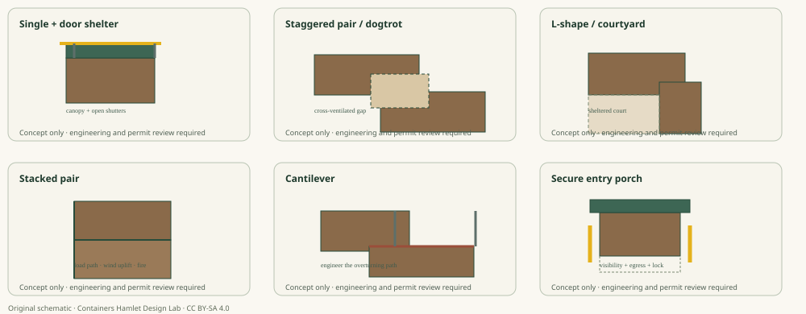

Container patterns
Configurations, paint and doors as shelter
The useful precedents are rarely a single “container house” shape. They are moves: a staggered pair with a gap, a shallow roof over an entry, a reused door leaf as a shutter, a strong body colour with a bright trim. Each move changes structure, weather, security and egress. Use these as questions to test, not details to copy.
Concept only. No configuration, paint system, hinge, shutter, lock or cantilever is engineered, code-compliant or security-certified. A cantilever or stacked container needs a structural engineer, foundation design, wind-uplift and fire/egress review. Security hardware must never defeat escape.
Configurations worth testing

| Pattern | What it can buy | What it still needs |
|---|---|---|
| Single container + entry shelter | A dry, legible entry; a small wind lobby; a place for a lockable shutter. | Hinge and wind design, snow shedding, door swing, egress, fire separation, paint touch-up. |
| Staggered pair / dogtrot | Cross-ventilation, a covered outdoor gap, a clear front door and a social edge. | Structural connections, roof drainage at the gap, snow drift, fire separation, privacy and maintenance access. |
| L-shape / courtyard | A sheltered court, a clear entry, and a defended outdoor room without a fortress wall. | Setbacks, glazing and shading, drainage, root protection, and a door that is visible from the approach. |
| Stacked pair | A smaller footprint and a two-level home or guest space. | Part 4 structural design, foundation, load transfer, wind uplift, fire separation, stairs, guards and egress. |
| Cantilever | A dramatic overhang, a sheltered below-space and a lighter footprint. | Engineer the overturning path, back-span, connection, foundation, wind uplift, snow and service penetrations. Do not copy a photograph. |
| Secure entry porch | One visible, lit threshold; a place for shutters, a parcel box and a lockable outer door. | Two ways out, breakable/lockable hardware, visibility, fire, accessibility and a lock strategy that works for all residents. |
| Hillside grade entry | A shorter accessible approach by entering on the uphill side; a lower level can walk out downslope. | Retaining, drainage, foundation, tree protection, slope stability and a continuous accessible route. A hill is not a substitute for an accessibility design. |
| Creek-spanning room | A clear span over a stream with big windows and the sound of water below. | Structural engineer, helical piles or clear-span frame outside the banks, flood/scour, debris, conservation-authority and Fisheries Act review. No fill in the creek. |
Two-storey stacks: visual pattern, not yet a Look inside model
The diagram shows a stacked pair, but no home is currently modelled as two storeys. The current geometry is horizontal; a real stack needs a continuous vertical load path, fire separation and egress, stairs and guards, wind/seismic design, foundation and height/zoning review. Adding a second storey to Look inside without those pieces would be false precision. Fern is now a two-container wide pair, not a stack; a future structural study can test a stack properly. Read the three-option two-storey study.
The Design Lab models the entry shelter and open door-leaf shutters as a configurable add-on, and the paint palette as a design choice. It does not model a cantilever, a hillside two-level structure or a creek-spanning room as buildable geometry; those remain structural and site studies.
Creek room and hillside entry
A creek-spanning room is dreamy, but it is not a container placed in a stream. It wants a clear span or piles kept outside the banks, no fill, big glazing, flood and debris design, and conservation-authority/Fisheries Act review. The views are the easy part; the abutments, scour and safe egress are the work.
A hillside entry can shorten the accessible route by meeting grade on the uphill side and using a lower walk-out level downslope. It still needs a continuous accessible route, landings, drainage, retaining design, geotechnical review and tree protection. A hill can reduce the ramp length; it does not remove the need for one.
Doors as shelter, shutters and security
Container doors are heavy steel leaves with strong frames. Reusing them can be beautiful and materially efficient, but a door is not a canopy by default. Three distinct uses should not be conflated:
- Canopy: a leaf held horizontally or at a slope above the entry, with engineered hinges, stays and a wind/snow release strategy. It must not block the door swing or egress.
- Open shutters: leaves hinged beside glazing and held open in normal use. In a storm they close over the opening. They need a positive hold-open, a controlled closing force, and a way to open from inside.
- Privacy screen: a leaf fixed or sliding beside a porch. It can shade and screen without pretending to be a security door.
Security is a layered outcome, not a product. Useful moves are a visible entry, a lit approach, a lockable outer shutter, laminated or toughened glazing, reinforced strike plates, and neighbours or paths with sightlines. A solid shutter can also hide an intruder, block a rescuer or trap an occupant. Every bedroom needs a viable escape route; security hardware must not override it.
The editor lets you test a shallow canopy and open shutters on the first module. It does not calculate hinge loads, wind uplift, snow drift or fire performance.
Prefer a graded trail to a long timber ramp
Long timber ramps are expensive, exposed and maintenance-heavy. A graded compacted-gravel trail with landings, a firm surface and edge protection can be easier to build and repair, while keeping the accessible route continuous. It still has to meet the slope, width, landing and surface requirements, drain properly and avoid root damage. Use the hill and a short threshold ramp to reduce the length; do not simply make the grade steeper.
Paint and colour
Paint is a maintenance system, not a colour chip. For steel containers, the durable sequence is surface preparation, a compatible primer, and a topcoat chosen for the exposure. The Design Lab palettes are visual intents only; a supplier’s system and a trial panel are required.
| Palette | Body / trim | Why try it | Watch |
|---|---|---|---|
| Forest / ochre | The supplied café reference; green body, bright entry. | Dark bodies gain heat; confirm fade, chalking and touch-up. | |
| Charcoal / cedar | A quiet body with a warm, legible entry. | Dark surfaces hide detail and can raise cooling loads. | |
| Oxide / cream | A warm, high-contrast entry that reads from a distance. | Red pigments can fade; cream trim shows dirt. | |
| Chalk / black | A light body and a crisp, visible door. | Glare and dirt; black trim gets hot. | |
| Marine / sand | A cool body with a warm entry; works near water. | Salt/chloride exposure; confirm coating system. |
Keep the entry trim distinct from the body. A door that disappears into a dark wall is harder to find in poor light. Paint the door edge and frame, not only the face. Do not paint over hinges, locks, seals, data plates or inspection marks.
A security checklist, not a promise
- See and be seen: a lit, unobstructed entry; no deep recess without a sightline; trim the planting.
- One obvious door: a single main entry, a sheltered threshold, a lockable outer shutter and a clear house number.
- Layers: a lockable gate or porch, a solid door, a secondary lock, laminated glass and window shutters where appropriate.
- Escape first: every sleeping room needs an operable escape; shutters and locks must open from inside without a key.
- Services: exterior lights, camera if used, and meter/utility access should not create a hidden corner.
- Community: paths, shared lighting and neighbours who can see the entry are more useful than a fortress wall.
Security is site-specific and cannot be guaranteed. A criminal can defeat most residential hardware; the aim is to remove easy concealment, make entry visible and keep escape possible.
Precedents, and what not to copy
- Dornob — Containers of Hope: two staggered containers, raised on stilts, a tilted roof, cross-ventilation and a low-cost approach. It is a Costa Rica project; the climate, structure and code context are not Ontario.
- Discover Containers — Utah cantilevered container house: a cantilever precedent. The photograph is not a structural drawing; a cantilever needs a stamped design and a foundation/back-span strategy.
- Instructables — Tiny Shipping Container Home: a DIY step-by-step. Useful for sequence and small-space thinking; not a verified code or engineering source.
- Homesteading — cool container homes and Morning Chores — shipping container homes: image-led collections. Treat dimensions, costs and construction claims as unverified inspiration.
- Houzz — shipping-container house photos and Adobe Stock — container interiors: visual references only; no stock image is copied into this project.
These sources inspired the patterns and questions above. They are not evidence that a configuration is lawful, safe, affordable or suitable for a Canadian climate.